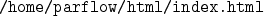

documentation is installed in the directory
There is a subdirectory for each manual.
In § 3.1, we describe how to write and install
manuals.
In § 3.2 we describe how to write and install
all other HTML files.
The utility pfhelp provides online access to some or all of the above documents. It uses the environment variable PARFLOW_HTML_VIEWER (which defaults to netscape) to determine the WWW viewer that will be used to view the online documentation. The environment variable PARFLOW_HELP is used to determine the location of the help files.
Developers on the NMG cluster should set $PARFLOW_HELP
as described in § 2.1.
Additional developer documentation is also provided via the CCSE Web server at

This site is called the ParFlow Info Exchange (PFIX).
In § 3.4, we describe how to write and
install AVS module help.
This online help is made available within AVS in the same manner as
that of the standard AVS module documentation.
To access it, the following must be set: